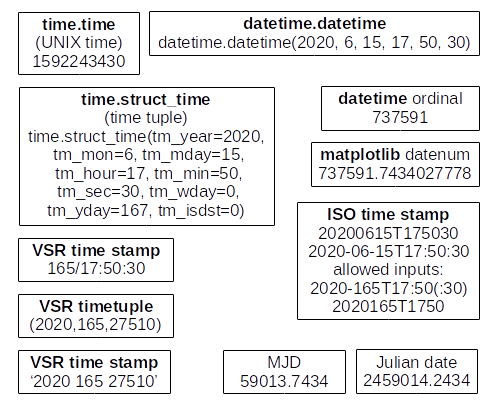

DatesTimes¶
Conversions between various date and time formats¶
This module originally contained the time conversion and formatting routines from the FORTRAN program DOPSET of Dick Manchester and Mark Gordon, subsequently augmented with some from program coco from the Starlink software collection. Time formats used by DSN Science data files were also added, as well as convenience routines. The time formats converted include

UNIX time
matplotlibdate numbersPython
datetimeobjectsJulian date and modified Julian date
formats used by the DSN VLBI Science Recorder series data file
miscellaneous other time strings
The project website contains the Git repository from which the package can be cloned.
Software documentation is generated with Sphinx.